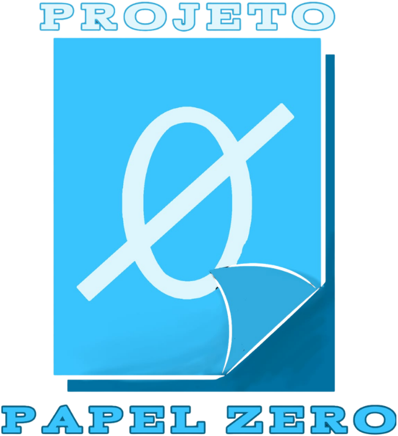

O fluxo atual
A OP é impressa, preenchida em cada etapa e levada até o laboratório. Lotes, horários, testes e pausas dependem de registros manuais.

Grupo AzulDESAFIO DE IDEIAS SENAI · MULTI PERFIL
O Papel Zero é uma proposta do Grupo Azul para conectar planejamento, mistura, qualidade, envase, laboratório e estoque em um único fluxo digital.
Uma fonte de informação. Rastreabilidade do lote ao resultado.
01 · O DESAFIO
A OP é impressa, preenchida em cada etapa e levada até o laboratório. Lotes, horários, testes e pausas dependem de registros manuais.
02
02 · A PROPOSTA
O sistema transforma os apontamentos que hoje estão no papel em dados conectados, acessíveis para quem realmente precisa deles.
Define produto, quantidade, prazos, demandas e limites do Controle de Qualidade.
O estoque ativo informa ao sistema quais materiais estão disponíveis para a produção.
Reconhecimento, início de máquina e pausas reduzem a necessidade de digitação no tablet.
O laudo, a produção e o checklist final ficam reunidos na mesma OP.
03 · INTELIGÊNCIA CONECTADA
IOT · ESP32
O ESP32 conectado à mistura e ao envase envia sinais do equipamento ao sistema. Assim, início, pausas e dados de produção podem ser registrados sem o operador preencher papéis.
AGENTE DE IA
Na Visão Geral, o Agente de IA interpreta os dados disponíveis e entrega relatórios rápidos sobre OPs, bloqueios de CQ, envase, bombas e alertas de estoque.
RASTREABILIDADE EM TEMPO REAL
04 · O QUE MUDA
Relaciona matéria-prima, lote, mistura, envase e resultado final.
Expõe tempos, pausas e desempenho das bombas em uma visão operacional.
Indica consumo projetado e antecipa a necessidade de reposição.
Um agente de IA ajuda o coordenador a consultar o cenário da produção.